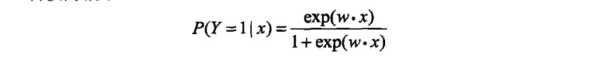
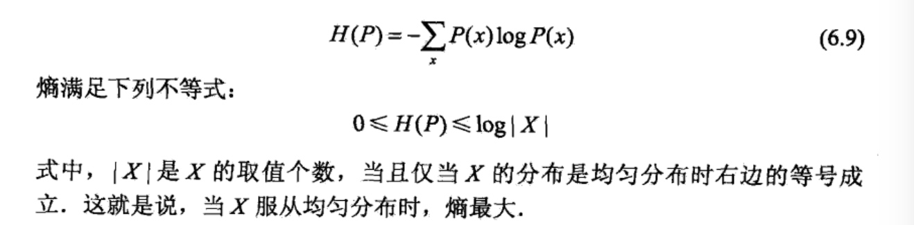
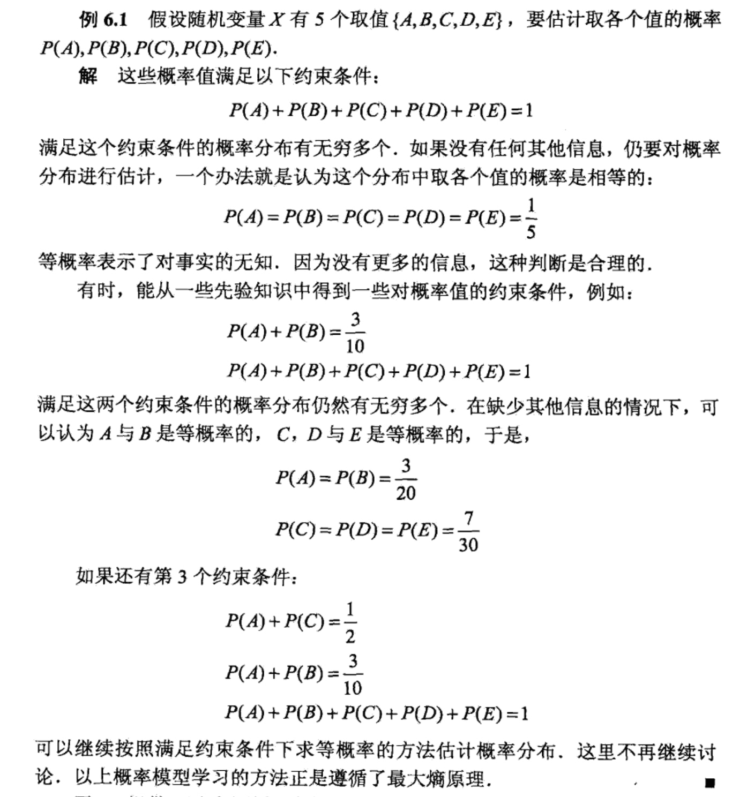
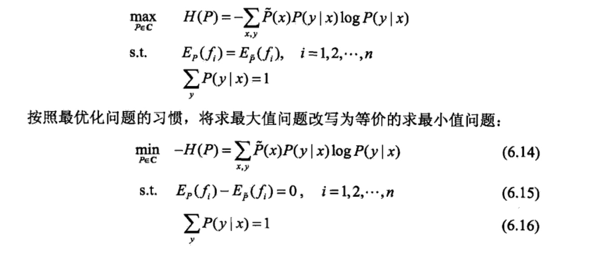
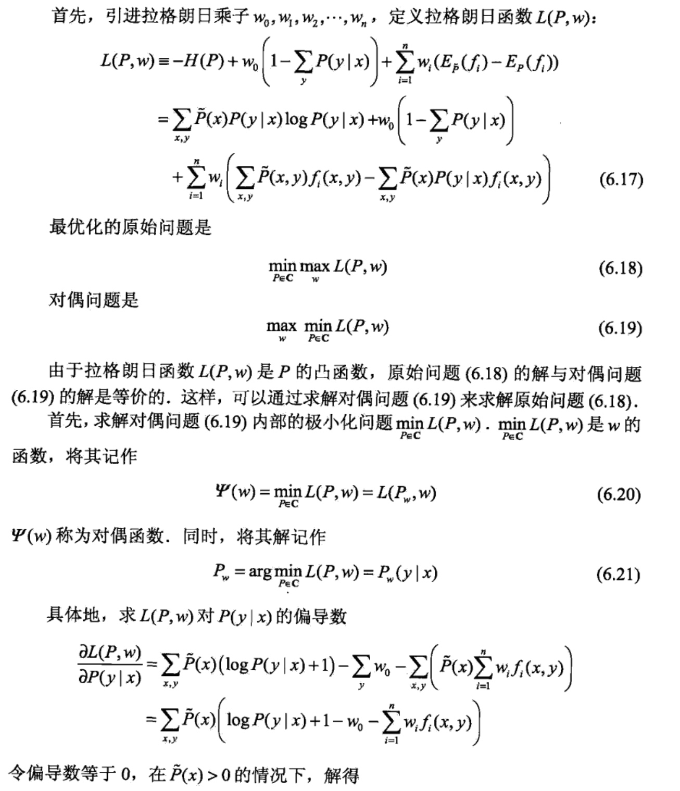
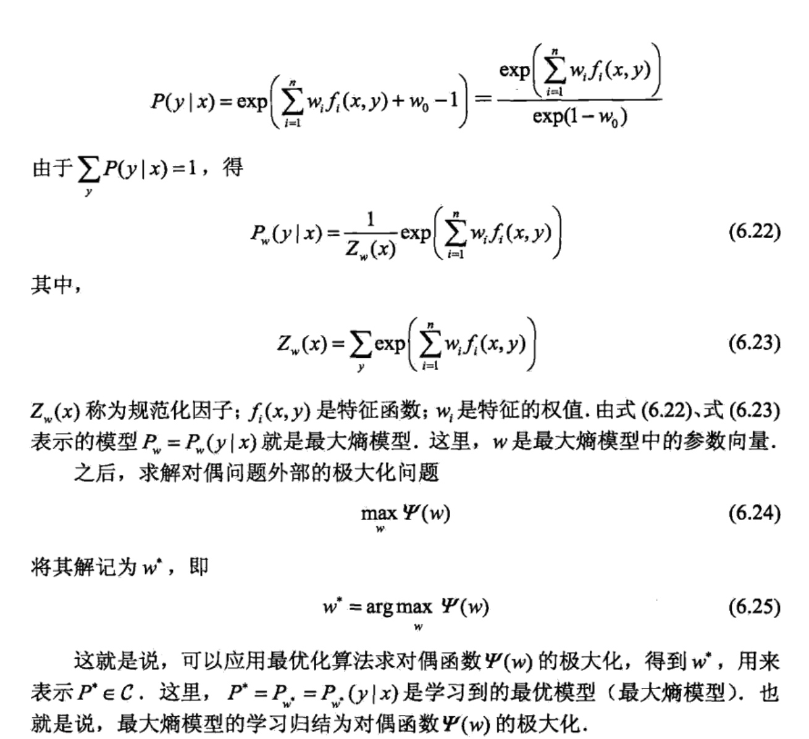

logistic regression(逻辑斯蒂回归)
简介：逻辑斯谛回归（logistic regression)是统计学习中的经典分类方法.最大熵是 概率模型学习的一个准则，将其推广到分类问题得到最大熵模型(maximum entropy model).逻辑斯谛回归模型与最大熵模型都属于对数线性模型.
逻辑斯蒂回归模型
逻辑斯蒂分布

二项逻辑斯蒂回归模型
二项逻辑斯诗回归模型（binomial logistic regression model)是一种分类模型，由条件概率分布\(P(Y|X)\)表示，形式为参数化的逻辑斯谛分布.这里，随机变量X取值为实数，随机变量Y取值为1或0.我们通过监督学习的方法来估计模型参数.

现在考査逻辑斯谛回归模型的特点.一个事件的几率（odds)是指该事件发生的概率与该事件不发生的概率的比值.如果事件发生的概率是p,那么该亊件的几率是\(\frac{1}{1-p}\) ,该事件的对数几率(log odds)或logit函数是

这就是说，在逻辑斯谛回归模型中，输出y = l的对数几率是输入x的线性函数.或者说，输出Y=1的对数几率是由输入x的线性函数表示的模型，即逻辑斯谛回归模型.
换一个角度看，考虑对输入x进行分类的线性函数\(w*x\),其值域为实数域.注意，这里\(x\in R^{n+1},w \in R^{n+1}\).通过逻辑斯谛回归模型定义式(6.5)可以将线性函数\(w*x\)转换为概率：

这时，线性函数的值越接近正无穷，概率值就越接近1；线性函数的值越接近负无穷，概率值就越接近0(如图6.1所示).这样的模型就是逻辑斯谛回归模型.
模型参数估计
逻辑斯谛回归模型学习时，对于给定的训练数据集\(T=\{{(x_1,y_1),(x_2,y_2)...(x_N,y_N)\}}\),其中\(x_i\in R^n,y_i \in \{{0,1\}}\)，可以应用极大似然估计法估计模型参数，从而得到逻辑斯谛回归模型.

多项了逻辑斯蒂回归
上面介绍的逻辑斯谛回归模型是二项分类模型，用于二类分类.可以将其推广为多项逻辑斯缔回归模型(multi-nominal logistic regression model)，用于多类分类.假设离散型随机变量Y的取值集合是{1,2...K}，那么多项逻辑斯谛回归模型是:

二项逻辑斯谛回归的参数估计法也可以推广到多项逻辑斯讳回归.
最大熵模型
最大熵模型（maximum entropy model)由最大熵原理推导实现.这里首先叙述一般的最大熵原理，然后讲解最大熵模型的推导，最后给出最大熵模型学习的形式。
最大熵原理
最大熵原理是概率模型学习的一个准则.最大熵原理认为，学习概率模型时，在所有可能的概率模型（分布）中，熵最大的模型是最好的模型.通常用约束条件来确定概率模型的集合，所以，最大熵原理也可以表述为在满足约束条件的模型集合中选取熵最大的模型.
假设离散随机变量X的概率分布是p(X),则其熵是：

直观地，最大熵原理认为要选择的概率模型首先必须满足已有的事实，即约束条件.在没有更多信息的情况下，那些不确定的部分都是“等可能的”.最大熵原理通过熵的最大化来表示等可能性.“等可能”不容易操作，而熵则是一个可优化的数值指标.
首先，可以通过一个简单的例子来了解一下最大熵原理.

图6.2提供了用最大熵原理进行概率模型选择的几何解释.概率模型集合P可由欧氏空间中的单纯形(simplex)表示，如左图的三角形(2-单纯形).一个点代表一个模型，整个单纯形代表模型集合.右图上的一条直线对应于一个约束 条件，直线的交集对应于满足所有约束条件的模型集合.一般地，这样的模型仍有无穷多个.学习的目的是在可能的模型集合中选择最优模型，而最大熵原理则给出最优模型选择的一个准则.

最大熵模型的定义
最大熵原理是统计学习的一般原理，将它应用到分类得到最大熵模型.
假设分类模型是一个条件概率分布\(P(Y|X),X \in \mathcal{X} \subseteq R^n\)表示输入，\(Y \in \mathcal{Y}\)表示输出，\(\mathcal{X}\)和\(\mathcal{Y}\)分别是输入和输出的集合.这个模型表示的是对于给定的输入\(\mathcal{X}\)，以条作概率\(P(Y|X)\)输出Y.
给定一个训练数据集
\(T= {\{(x_1,y_1),(x_2,y_2),...(x_N,y_N)}\}\)
学习的目标是用最大熵原理选择最好的分类模型。
首先考虑模型应该满足的条件，给定训练数据集，可以确定联合分布P(X,Y)的经验分布和边缘分布P(X)的经验分布，分别以\(\tilde{P}(X,Y)和\tilde{P}(X)\)表示。这里：

用特征函数\(f(x,y)描述输入x和输出y之间的某一个事实\)。其定义是：

特征函数f(x,y)关于经验分布\(\tilde{P}(X,Y)\)的期望值，用\(E_\tilde{P}(f)\)表示：

特征函数f(x,y)关于模型P(Y|X)与经验分布\(\tilde{P}(X)\)的期望值，用\(E_{P}(f)\)表示：

最大熵模型的定义为：

最大熵模型的学习
最大熵模型的学习过程就是求解最大熵模型的过程.最大熵模型的学习可以形式化为约束最优化问题.
对于给定的训练数据集\(T= {\{(x_1,y_1),(x_2,y_2),...(x_N,y_N)}\}\)以及特征函数\(f_i(x,y),i=1,2,...n\),最大熵模型的学习等价于约束最优化问题：

求解约束最优化问题(6.14)〜(6.16)，所得出的解，就是最大熵模型学习的解.下面给出具体推导.
这里，将约束最优化的原始问题转换为无约束最优化的对偶问题.通过求解对偶问题求解原始问题.


下面举例来说明最大熵模型的计算：
例：假设随机变量X有5个取值{A,B,C,D,E}，要估计各个值的概率P(A),P(B),P(C),P(D),P(E).


极大似然估计
从以上最大熵模型学习中可以看出，最大熵模型是由式(6.22)、式(6.23)表示的 条件概率分布.下面证明对偶函数的极大化等价于最大嫡模型的极大似然估计.
己知训练数据的经验概率分布\(\tilde{P}(X,Y)\),条件概率分布\(P(Y|X)\)的对数似然 函数表示为:

当提哦啊煎概率分布P(y|x)是最大熵模型(6.22)和(6.23)时,对数似然函数\(L_ \tilde{p}(P_w)\)为：

比较算式(6.26)和式(6.27),可得：

既然对偶函数\(\psi(w)\)等价于对数似然函数\(L_{\tilde p}(P_w)\) ,于是证明了最大熵模型学习中的对偶函数极大化等价于最大熵模型的极大似然估计这一事实.
这样，最大熵模型的学习问题就转换为具体求解对数似然函数极大化或对偶函数极大化的问题.
可以将最大熵模型写成更一般的形式.

最大熵模型与逻辑斯谛回归模型有类似的形式，它们又称为对数线性模型(log linear model).模型学习就是在给定的训练数据条件下对模型进行极大似然估计或正则化的极大似然估计.